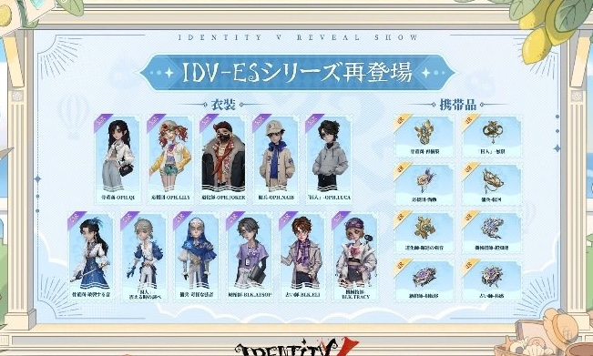
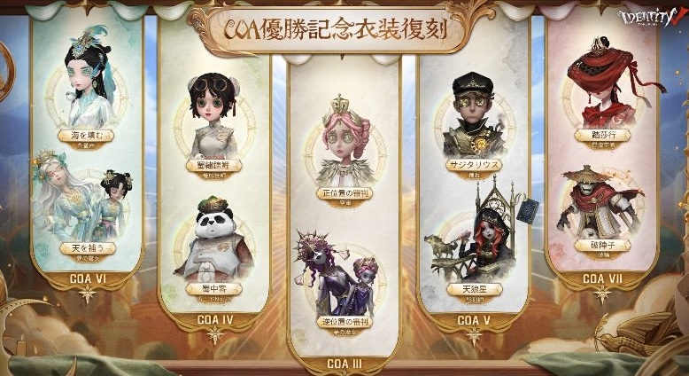
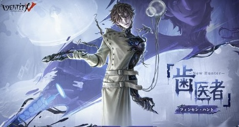
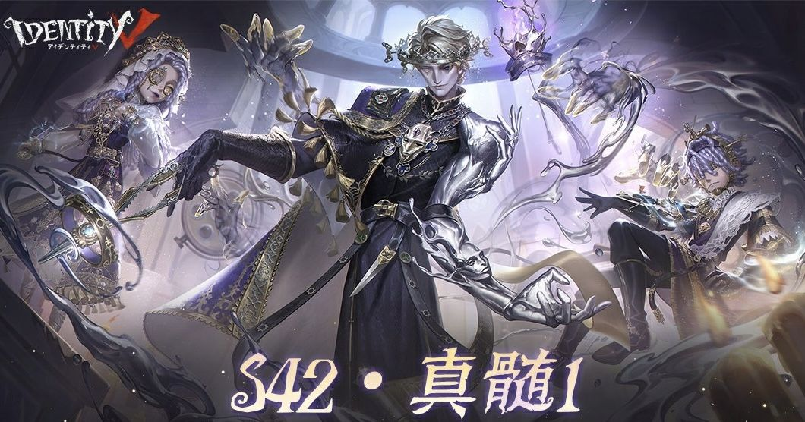
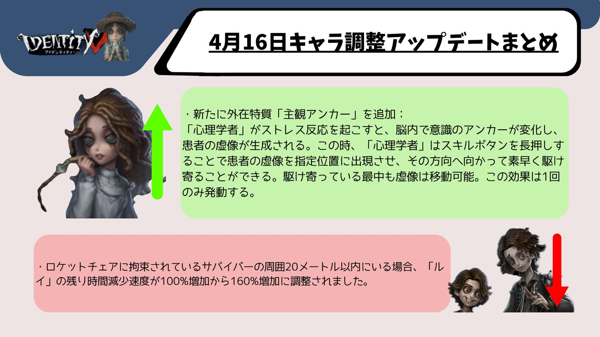
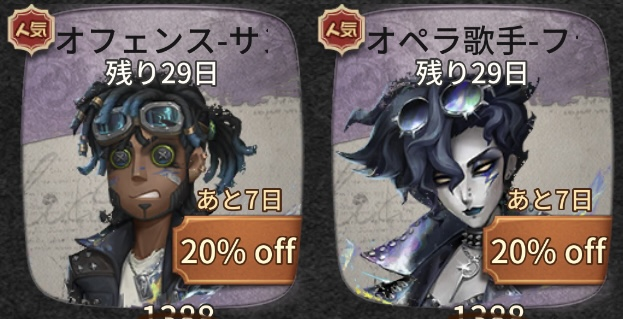
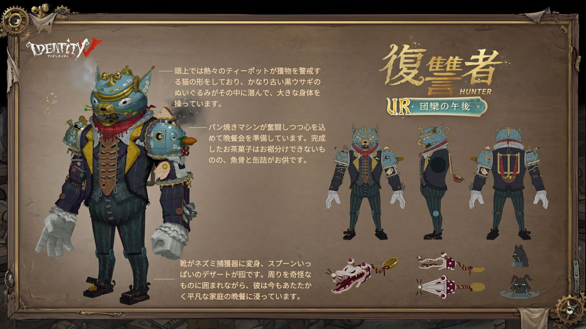
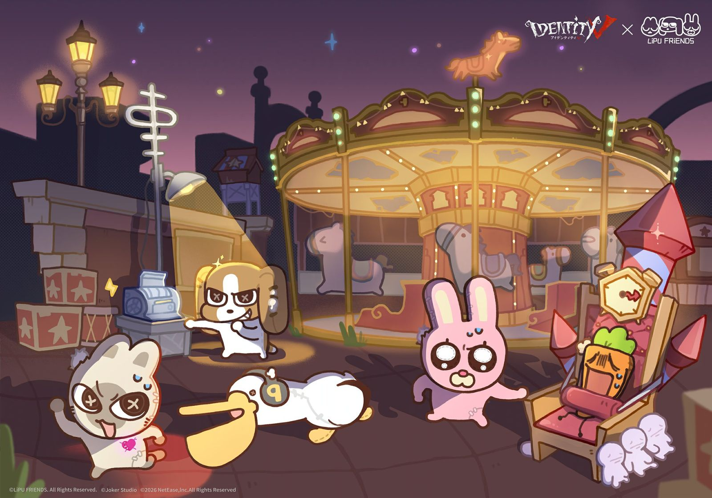
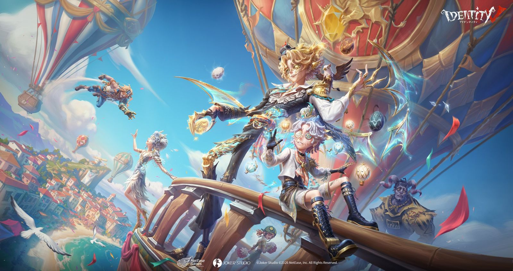
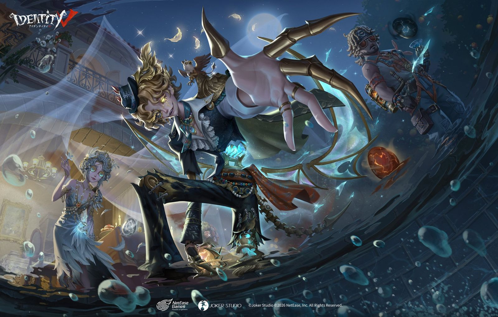

IdentityV（第五人格）の2026年4月に実施されたアップデート・イベント・キャラ調整のまとめです。
2026.4.30現在

eスポーツシリーズ新衣装がショップに登場！
【SSR衣装】バッツマン-BLK.GANJIと【UR携帯品】バッツマン-飛躍、【SSR衣装】芸者-BLK.MAIと【UR携帯品】芸者-変遷が期間限定で登場！
各衣装パックは20%オフの2618エコーで購入可能！
【SSR衣装】道化師-オーバービート、応援団-協律の反響、機械技師-差動装置も1388エコーまたは4888欠片で購入可能！
販売期間：2026年4月30日メンテナンス後〜2026年5月27日23時59分

eスポーツシリーズ・チャンピオンシリーズ衣装が期間限定再登場！
OPHシリーズ・BLKシリーズの【SSR衣装】【UR携帯品】が多数再登場！ログインで【限定衣装割引券】1枚を獲得でき、対象衣装が25%オフに！

COA Ⅲ〜COA Ⅶの優勝シリーズ衣装も期間限定で再登場します。
再登場期間：2026年4月30日メンテナンス後〜2026年5月27日23時59分
詳細はこちら

新ハンター「歯医者」がマルチモードで使用可能になりました！
「歯医者」は858エコーまたは4508手掛かりで購入可能！
【SR衣装】「歯医者」-署名のない論証とのパックは20%オフの938エコーで販売中！
パック販売期間：2026年4月30日メンテナンス後〜2026年5月13日23時59分
2026.4.23現在
S41終了・S42シーズン開始！
今週のメンテナンス後にS41が終了し、S42が始まります。シーズンラストスパートイベントも終了します。
【閲歴システム】新シーズンの閲歴レベル報酬が開放されます。
【協会活躍度ランキングボーナス】個人・協会活躍度がリセットされ、最終ランキングに基づいてシーズンボーナスが配布されます。
【荘園生涯】データが2026年4月23日0時（UTC+8）まで同期更新されます。

シーズン真髄 S42・真髄1が開放！
【UR衣装】「歯医者」-智者への戴冠、【SSR衣装】「心理学者」-「目覚めの詩編」、【SSR衣装】患者-「未完の佳作」が新たに追加されます！
抽選80/130回達成で対応アイコンを1つ選択、180回達成で【アイコン】「歯医者」-智者への戴冠を獲得できます。
新ハンター「歯医者」フィンセン・ハントが登場！
生まれつき痛覚のないフィンセン・ハントは、レンズから見える歪な幻覚の虜。狂気的な光線療法の実験と「乳歯」との絆で自らの存在を確かめようとしている。
【外在特質】菌類共生：レンズ起動中、攻撃時の移動速度が5%上昇。
【主要スキル】紫外線放射：レンズで放射エリアを形成し、菌類がサバイバーを攻撃。溜め攻撃で放射エリアが障害物に沿って前進。
【沼より現る】放射エリアの最先端まで瞬時に移動（クールタイム20秒）。上級解放で2回連続移動が可能に。
【光線療法】紫外線スクリーンを設置。触れたサバイバーの移動速度を低下させ、上級解放では解読・操作速度も20%ダウン。
キャラクター詳細はこちら
2026.4.16現在
「演繹の星予測」イベント開催！
サバイバー4名・ハンター2名を選んで演繹の星を予測しよう！予測が当たると【ニンフカード】を最大6枚獲得できます！
さらに「最高演繹予測」では計4名を選択し、当選で【霊感】を最大112獲得可能！
イベント期間：2026年4月16日メンテナンス後〜4月22日23時59分
詳細はこちら

対戦バランス調整が実施！
【ハンター調整】雑貨商・「女王蜂」のスキルや性能が調整されました。
【サバイバー調整】人形師・オフェンス・闘牛士・「心理学者」調整が入り、心理学者に新外在特質「主観アンカー」が追加されました。ストレス反応時に患者の虚像を生成し、指定位置へ素早く駆け寄れる新スキルです。
定型文に新機能が追加！
定型文の履歴機能が追加され、対戦中に送信した定型文がリストに保存されるようになりました！
「____（エリア名）で解読する」などの新しい即時定型文も追加されています。
2026.4.9現在

COA Ⅷ優勝 ZETA DIVISION戦隊限定衣装がショップに登場！
WE ARE ZETA
DIVISION！【SSR衣装】オフェンス-サンダーレースとオペラ歌手-フラッシュパルスが期間限定で登場！
販売価格1388エコー、初週20%オフで1108エコーで購入可能！
販売期間：2026年4月9日メンテナンス後〜2026年5月7日23時59分

【UR衣装】復讐者-団欒の午後がショップに登場！
ウィムジーシリーズの新衣装が期間限定で登場！2888エコーまたは12888欠片で購入可能！初週25%オフの2158エコーで販売されます。
販売期間：2026年4月9日メンテナンス後〜2026年5月6日23時59分
金リンゴショップに新アイテムが追加！
【SSR携帯品】記者-「殻の中の物」が41600金リンゴで購入可能！
【SSR家具】大会プロジェクターが19800金リンゴで購入可能！
販売開始：2026年4月9日メンテナンス後
コピーキャットゲームのバランス調整が実施！
催眠術師・花火師・監督・流浪者・評論家・学徒・香料師・修道士・ライトキーパーなど多数のキャラクターのスキルが調整されました。
また、探偵団の勝利演繹要求数が52〜58個にランダム調整されました。
詳細はこちら
2026.4.2現在

Identity V×LiPU FRiENDSコラボイベント開催！
LiPU
FRiENDSが荘園に勢揃い！イベントに参加すると、【SSR衣装】幻灯師-XIANLUOLIPU、【SSR家具】ぱっくんペリカン、【SRペット】LIPUなどの豪華ボーナスを無料で獲得できます！
コラボ衣装【SSR衣装】は1388エコー（初週15%オフ・1178エコー）で購入可能！
イベント期間：2026年4月2日メンテナンス後〜2026年5月2日23時59分
コラボ情報の詳細はこちら

テーマイベント「リベロの天外の来客」が開始！
Mr.リーズニングと共に事件調査を進めよう！ストーリーを進めると、【衣装】気象学者-気象観測、【携帯品】サバイバー-飛行大冒険、待機モーション解放カードなどの豪華ボーナスを獲得できます。
また、飛行大会ミニゲームでは【SSR家具】海上の城などが獲得可能！期間限定公共マップ「海辺の町」も開放されます。
イベント期間：2026年4月2日メンテナンス後〜2026年4月22日23時59分
詳細はこちら
「飛行訓練ノート」タスクイベント開放！
各タスクを完了すると、SSR衣装解放カード、動く落書き、ランク戦保護カードなどのボーナスを獲得できます！
イベント期間：2026年4月2日メンテナンス後〜2026年4月22日23時59分

シーズン真髄 S41・真髄3が開放！
【UR衣装】「フラバルー」-黒鷲、【SSR衣装】踊り子-「巫雲」、【SSR衣装】航空エンジニア-プロペラの翼が新たに追加されます！

【UR衣装】曲芸師「浮遊霊」パックがショップに登場！
【浮遊霊】パックが32%オフの2688エコーで期間限定販売！【UR衣装】浮遊霊と【SSR携帯品】曲芸師-アバート号のセットです。
販売期間：2026年4月2日メンテナンス後〜2026年5月6日23時59分
欠片でかわいいSSR衣装購入できるのは激アツ、見逃しはならぬ